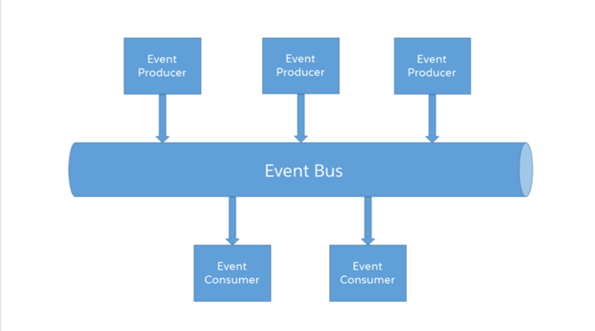

.png)
Platform Event is based on Event-Driven Architecture which enables apps to communicate inside and outside of Salesforce. Platform events are based on the publish/subscribe model and work directly with a message bus that handles the queue of incoming events and processes listening for them. This is built in real-time integration patterns in the Salesforce Platform which helps to reduce point-to-point integration.
What is Event-Driven Architecture
The paradigm of event-based communication revolves around a publisher-subscriber model—a sender broadcasts a message that one or more receivers capture. It’s like radio transmission—a transmitter tower broadcasts a radio signal, and receivers get the signal if they’re
More On Event-Driven Architecture
Event: A change in state that is meaningful in a business process. Event message/Notification: A message that contains data about the event. Event producer: The publisher of an event message over a channel. Channel: A conduit in which an event producer transmits a message. Event consumers subscribe to the channel to receive messages. Also referred to as event bus in Salesforce. Event consumer: A subscriber to a channel that receives messages from the channel. SObject like Salesforce Entity - Suffixed with __e
Benefits of Platform Events

In order to overcome the governor limits of Salesforce, the platform events can be used. Mixed DML Operations, Too Many SOQL Queries, Too Many DML Statements, CPU Timeout Salesforce’s Governor limits are there for a reason but even when you employ best practices you may still exceed them.
Considerations of Platform Events
Platform event is appended with__e suffix for the API name of the event. You can not query Platform events through SOQL or SOSL. You can not use Platform in reports, list views, and searches. Platform events don’t have an associated tab. Published platform events can’t be rolled back. All platform event fields are read-only by default. Only “after insert” Triggers Are Supported. You can access platform events both through API and declaratively. You can control platform events through Profiles and permissions.
Use Case for Platform Events
Platform to External App: Order Fulfillment in a Vendor App
When an opportunity closes as won in Salesforce, your company has won a deal with a customer. Let’s say you use vendors to ship products associated with an opportunity. Each vendor has an external app that processes shipment orders for specific products. The external app listens to platform events. When an opportunity closes, a trigger, which is part of a product order app in Salesforce, fires and publishes a platform event message. Each vendor app is notified of the event. The vendor responsible for shipping the specific product creates the shipment.
Publish/Subscribe Platform Events

Create a Platform event:Event Name: Shipment Order API Name: Shipment_Order__e Now this platform event can be published using triggers, flows, or even using APIs. The platform event can be subscribed to using:Triggers(after insert)LWC - Use the empApi methods Aura - add the lightning:empApi component inside your custom component and assign an aura:id attribute to it.
Conclusion
Using Platform Events can lead to more efficient and automated business processes, as well as improved communication between different departments and systems. With the help of a skilled Salesforce developer or consultant, your organization can start taking advantage of this powerful feature today.